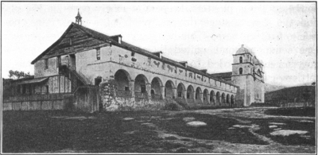
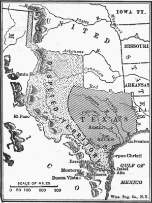
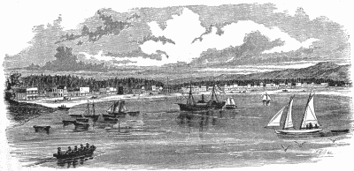

THE MIDDLE BORDER AND THE GREAT WEST
"We shall not send an emigrant beyond the Mississippi in a hundred years," exclaimed Livingston, the principal author of the Louisiana purchase. When he made this astounding declaration, he doubtless had before his mind's eye the great stretches of unoccupied lands between the Appalachians and the Mississippi. He also had before him the history of the English colonies, which told him of the two centuries required to settle the seaboard region. To practical men, his prophecy did not seem far wrong; but before the lapse of half that time there appeared beyond the Mississippi a tier of new states, reaching from the Gulf of Mexico to the southern boundary of Minnesota, and a new commonwealth on the Pacific Ocean where American emigrants had raised the Bear flag of California.
The Advance of the Middle Border
Missouri. —When the middle of the nineteenth century had been reached, the Mississippi River, which Daniel Boone, the intrepid hunter, had crossed during Washington's administration "to escape from civilization" in Kentucky, had become the waterway for a vast empire. The center of population of the United States had passed to the Ohio Valley. Missouri, with its wide reaches of rich lands, lowlying, level, and fertile, well adapted to hemp raising, had drawn to its borders thousands of planters from the old Southern states—from Virginia and the Carolinas as well as from Kentucky and Tennessee. When the great compromise of 1820-21 admitted her to the union, wearing "every jewel of sovereignty," as a florid orator announced, migratory slave owners were assured that their property would be safe in Missouri.
Along the western shore of the Mississippi and on both banks of the Missouri to the uttermost limits of the state, plantations tilled by bondmen spread out in broad expanses. In the neighborhood of Jefferson City the slaves numbered more than a fourth of the population.
Into this stream of migration from the planting South flowed another current of land-tilling farmers; some from Kentucky, Tennessee, and Mississippi, driven out by the onrush of the planters buying and consolidating small farms into vast estates; and still more from the East and the Old World. To the northwest over against Iowa and to the southwest against Arkansas, these yeomen laid out farms to be tilled by their own labor. In those regions the number of slaves seldom rose above five or six per cent of the population. The old French post, St. Louis, enriched by the fur trade of the Far West and the steamboat traffic of the river, grew into a thriving commercial city, including among its seventy-five thousand inhabitants in 1850 nearly forty thousand foreigners, German immigrants from Pennsylvania and Europe being the largest single element.
Arkansas. —Below Missouri lay the territory of Arkansas, which had long been the paradise of the swarthy hunter and the restless frontiersman fleeing from the advancing borders of farm and town. In search of the life, wild and free, where the rifle supplied the game and a few acres of ground the corn and potatoes, they had filtered into the territory in an unending drift, "squatting" on the land. Without so much as asking the leave of any government, territorial or national, they claimed as their own the soil on which they first planted their feet. Like the Cherokee Indians, whom they had as neighbors, whose very customs and dress they sometimes adopted, the squatters spent their days in the midst of rough plenty, beset by chills, fevers, and the ills of the flesh, but for many years unvexed by political troubles or the restrictions of civilized life.
Unfortunately for them, however, the fertile valleys of the Mississippi and Arkansas were well adapted to the cultivation of cotton and tobacco and their sylvan peace was soon broken by an invasion of planters.
The newcomers, with their servile workers, spread upward in the valley toward Missouri and along the southern border westward to the Red River. In time the slaves in the tier of counties against Louisiana ranged from thirty to seventy per cent of the population. This marked the doom of the small farmer, swept Arkansas into the main current of planting politics, and led to a powerful lobby at Washington in favor of admission to the union, a boon granted in 1836.
Michigan. —In accordance with a well-established custom, a free state was admitted to the union to balance a slave state. In 1833, the people of Michigan, a territory ten times the size of Connecticut, announced that the time had come for them to enjoy the privileges of a commonwealth. All along the southern border the land had been occupied largely by pioneers from New England, who built prim farmhouses and adopted the town-meeting plan of self-government after the fashion of the old home. The famous post of Detroit was growing into a flourishing city as the boats plying on the Great Lakes carried travelers, settlers, and freight through the narrows. In all, according to the census, there were more than ninety thousand inhabitants in the territory; so it was not without warrant that they clamored for statehood.
Congress, busy as ever with politics, delayed; and the inhabitants of Michigan, unable to restrain their impatience, called a convention, drew up a constitution, and started a lively quarrel with Ohio over the southern boundary. The hand of Congress was now forced. Objections were made to the new constitution on the ground that it gave the ballot to all free white males, including aliens not yet naturalized; but the protests were overborne in a long debate. The boundary was fixed, and Michigan, though shorn of some of the land she claimed, came into the union in 1837.
Wisconsin. —Across Lake Michigan to the west lay the territory of Wisconsin, which shared with Michigan the interesting history of the Northwest, running back into the heroic days when French hunters and missionaries were planning a French empire for the great monarch, Louis XIV. It will not be forgotten that the French rangers of the woods, the black-robed priests, prepared for sacrifice, even to death, the trappers of the French agencies, and the French explorers—Marquette, Joliet, and Menard—were the first white men to paddle their frail barks through the northern waters. They first blazed their trails into the black forests and left traces of their work in the names of portages and little villages. It was from these forests that Red Men in full war paint journeyed far to fight under the fleur-de-lis of France when the soldiers of King Louis made their last stand at Quebec and Montreal against the imperial arms of Britain.
It was here that the British flag was planted in 1761 and that the great Pontiac conspiracy was formed two years later to overthrow British dominion.
When, a generation afterward, the Stars and Stripes supplanted the Union Jack, the French were still almost the only white men in the region. They were soon joined by hustling Yankee fur traders who did battle royal against British interlopers. The traders cut their way through forest trails and laid out the routes through lake and stream and over portages for the settlers and their families from the states "back East." It was the forest ranger who discovered the water power later used to turn the busy mills grinding the grain from the spreading farm lands. In the wake of the fur hunters, forest men, and farmers came
miners from Kentucky, Tennessee, and Missouri crowding in to exploit the lead ores of the northwest, some of them bringing slaves to work their claims. Had it not been for the gold fever of 1849 that drew the wielders of pick and shovel to the Far West, Wisconsin would early have taken high rank among the mining regions of the country.
From a favorable point of vantage on Lake Michigan, the village of Milwaukee, a center for lumber and grain transport and a place of entry for Eastern goods, grew into a thriving city. It claimed twenty thousand inhabitants, when in 1848 Congress admitted Wisconsin to the union. Already the Germans, Irish, and Scandinavians had found their way into the territory. They joined Americans from the older states in clearing forests, building roads, transforming trails into highways, erecting mills, and connecting streams with canals to make a network of routes for the traffic that poured to and from the Great Lakes.
Iowa and Minnesota. —To the southwest of Wisconsin beyond the Mississippi, where the tall grass of the prairies waved like the sea, farmers from New England, New York, and Ohio had prepared Iowa for statehood. A tide of immigration that might have flowed into Missouri went northward; for freemen, unaccustomed to slavery and slave markets, preferred the open country above the compromise line. With incredible swiftness, they spread farms westward from the Mississippi. With Yankee ingenuity they turned to trading on the river, building before 1836 three prosperous centers of traffic: Dubuque, Davenport, and Burlington. True to their old traditions, they founded colleges and academies that religion and learning might be cherished on the frontier as in the states from which they came. Prepared for self-government, the Iowans laid siege to the door of Congress and were admitted to the union in 1846.
Above Iowa, on the Mississippi, lay the territory of Minnesota—the home of the Dakotas, the Ojibways, and the Sioux. Like Michigan and Wisconsin, it had been explored early by the French scouts, and the first white settlement was the little French village of Mendota. To the people of the United States, the resources of the country were first revealed by the historic journey of Zebulon Pike in 1805 and by American fur traders who were quick to take advantage of the opportunity to ply their arts of hunting and bartering in fresh fields. In 1839 an American settlement was planted at Marina on the St. Croix, the outpost of advancing civilization. Within twenty years, the territory, boasting a population of 150,000, asked for admission to the union. In 1858 the plea was granted and Minnesota showed her gratitude three years later by being first among the states to offer troops to Lincoln in the hour of peril.
On to the Pacific—Texas and the Mexican War
The Uniformity of the Middle West. —There was a certain monotony about pioneering in the Northwest and on the middle border. As the long stretches of land were cleared or prepared for the plow, they were laid out like checkerboards into squares of forty, eighty, one hundred sixty, or more acres, each the seat of a homestead. There was a striking uniformity also about the endless succession of fertile fields spreading far and wide under the hot summer sun. No majestic mountains relieved the sweep of the prairie. Few monuments of other races and antiquity were there to awaken curiosity about the region. No sonorous bells in old missions rang out the time of day. The chaffering Red Man bartering blankets and furs for powder and whisky had passed farther on. The population was made up of plain farmers and their families engaged in severe and unbroken labor, chopping down trees, draining fever-breeding swamps, breaking new ground, and planting from year to year the same rotation of crops. Nearly all the settlers were of native American stock into whose frugal and industrious lives the later Irish and German immigrants fitted, on the whole, with little friction. Even the Dutch oven fell before the cast-iron cooking stove.
Happiness and sorrow, despair and hope were there, but all encompassed by the heavy tedium of prosaic sameness.

Santa Barbara Mission
A Contrast in the Far West and Southwest. —As George Rogers Clark and Daniel Boone had stirred the snug Americans of the seaboard to seek their fortunes beyond the Appalachians, so now Kit Carson, James Bowie, Sam Houston, Davy Crockett, and John C. Frémont were to lead the way into a new land, only a part of which was under the American flag. The setting for this new scene in the westward movement was thrown out in a wide sweep from the headwaters of the Mississippi to the banks of the Rio Grande; from the valleys of the Sabine and Red rivers to Montana and the Pacific slope. In comparison with the middle border, this region presented such startling diversities that only the eye of faith could foresee the unifying power of nationalism binding its communities with the older sections of the country. What contrasts indeed! The blue grass region of Kentucky or the rich, black soil of Illinois—the painted desert, the home of the sage brush and the coyote! The level prairies of Iowa—the mighty Rockies shouldering themselves high against the horizon! The long bleak winters of Wisconsin—California of endless summer! The log churches of Indiana or Illinois—the quaint missions of San Antonio, Tucson, and Santa Barbara! The little state of Delaware—the empire of Texas, one hundred and twenty times its area! And scattered about through the Southwest were signs of an ancient civilization—fragments of four-and five-story dwellings, ruined dams, aqueducts, and broken canals, which told of once prosperous peoples who, by art and science, had conquered the aridity of the desert and lifted themselves in the scale of culture above the savages of the plain.
The settlers of this vast empire were to be as diverse in their origins and habits as those of the colonies on the coast had been. Americans of English, Irish, and Scotch-Irish descent came as usual from the Eastern states. To them were added the migratory Germans as well. Now for the first time came throngs of Scandinavians. Some were to make their homes on quiet farms as the border advanced against the setting sun. Others were to be Indian scouts, trappers, fur hunters, miners, cowboys, Texas planters, keepers of lonely posts on the plain and the desert, stage drivers, pilots of wagon trains, pony riders, fruit growers,
"lumber jacks," and smelter workers. One common bond united them—a passion for the self-government accorded to states. As soon as a few thousand settlers came together in a single territory, there arose a mighty shout for a position beside the staid commonwealths of the East and the South. Statehood meant to the pioneers self-government, dignity, and the right to dispose of land, minerals, and timber in their own way. In the quest for this local autonomy there arose many a wordy contest in Congress, each of the political parties lending a helping hand in the admission of a state when it gave promise of adding new congressmen of the "right political persuasion," to use the current phrase.
Southern Planters and Texas. —While the farmers of the North found the broad acres of the Western prairies stretching on before them apparently in endless expanse, it was far different with the Southern planters. Ever active in their search for new fields as they exhausted the virgin soil of the older states, the restless subjects of King Cotton quickly reached the frontier of Louisiana. There they paused; but only for a moment. The fertile land of Texas just across the boundary lured them on and the Mexican republic to which it belonged extended to them a more than generous welcome. Little realizing the perils lurking in a
"peaceful penetration," the authorities at Mexico City opened wide the doors and made large grants of land to American contractors, who agreed to bring a number of families into Texas. The omnipresent Yankee, in the person of Moses Austin of Connecticut, hearing of this good news in the Southwest, obtained a grant in 1820 to settle three hundred Americans near Bexar—a commission finally carried out to the letter by his son and celebrated in the name given to the present capital of the state of Texas. Within a decade some twenty thousand Americans had crossed the border.
Mexico Closes the Door. —The government of Mexico, unaccustomed to such enterprise and thoroughly frightened by its extent, drew back in dismay. Its fears were increased as quarrels broke out between the Americans and the natives in Texas. Fear grew into consternation when efforts were made by President Jackson to buy the territory for the United States. Mexico then sought to close the flood gates. It stopped all American colonization schemes, canceled many of the land grants, put a tariff on farming implements, and abolished slavery. These barriers were raised too late. A call for help ran through the western border of the United States. The sentinels of the frontier answered. Davy Crockett, the noted frontiersman, bear hunter, and backwoods politician; James Bowie, the dexterous wielder of the knife that to this day bears his name; and Sam Houston, warrior and pioneer, rushed to the aid of their countrymen in Texas.
Unacquainted with the niceties of diplomacy, impatient at the formalities of international law, they soon made it known that in spite of Mexican sovereignty they would be their own masters.
The Independence of Texas Declared. —Numbering only about one-fourth of the population in Texas, they raised the standard of revolt in 1836 and summoned a convention. Following in the footsteps of their ancestors, they issued a declaration of independence signed mainly by Americans from the slave states.
Anticipating that the government of Mexico would not quietly accept their word of defiance as final, they dispatched a force to repel "the invading army," as General Houston called the troops advancing under the command of Santa Ana, the Mexican president. A portion of the Texan soldiers took their stand in the Alamo, an old Spanish mission in the cottonwood trees in the town of San Antonio. Instead of obeying the order to blow up the mission and retire, they held their ground until they were completely surrounded and cut off from all help. Refusing to surrender, they fought to the bitter end, the last man falling a victim to the sword. Vengeance was swift. Within three months General Houston overwhelmed Santa Ana at the San Jacinto, taking him prisoner of war and putting an end to all hopes for the restoration of Mexican sovereignty over Texas.
The Lone Star Republic, with Houston at the head, then sought admission to the United States. This seemed at first an easy matter. All that was required to bring it about appeared to be a treaty annexing Texas to the union. Moreover, President Jackson, at the height of his popularity, had a warm regard for General Houston and, with his usual sympathy for rough and ready ways of doing things, approved the transaction. Through an American representative in Mexico, Jackson had long and anxiously labored, by means none too nice, to wring from the Mexican republic the cession of the coveted territory. When the Texans took matters into their own hands, he was more than pleased; but he could not marshal the approval of two-thirds of the Senators required for a treaty of annexation. Cautious as well as impetuous, Jackson did not press the issue; he went out of office in 1837 with Texas uncertain as to her future.
Northern Opposition to Annexation. —All through the North the opposition to annexation was clear and strong. Anti-slavery agitators could hardly find words savage enough to express their feelings. "Texas,"
exclaimed Channing in a letter to Clay, "is but the first step of aggression. I trust indeed that Providence will beat back and humble our cupidity and ambition. I now ask whether as a people we are prepared to seize on a neighboring territory for the end of extending slavery? I ask whether as a people we can stand forth in the sight of God, in the sight of nations, and adopt this atrocious policy? Sooner perish! Sooner be our name blotted out from the record of nations!" William Lloyd Garrison called for the secession of the Northern states if Texas was brought into the union with slavery. John Quincy Adams warned his countrymen that they were treading in the path of the imperialism that had brought the nations of antiquity to judgment and destruction. Henry Clay, the Whig candidate for President, taking into account changing

public sentiment, blew hot and cold, losing the state of New York and the election of 1844 by giving a qualified approval of annexation. In the same campaign, the Democrats boldly demanded the
"Reannexation of Texas," based on claims which the United States once had to Spanish territory beyond the Sabine River.
Annexation. —The politicians were disposed to walk very warily. Van Buren, at heart opposed to slavery extension, refused to press the issue of annexation. Tyler, a pro-slavery Democrat from Virginia, by a strange fling of fortune carried into office as a nominal Whig, kept his mind firmly fixed on the idea of reëlection and let the troublesome matter rest until the end of his administration was in sight. He then listened with favor to the voice of the South. Calhoun stated what seemed to be a convincing argument: All good Americans have their hearts set on the Constitution; the admission of Texas is absolutely essential to the preservation of the union; it will give a balance of power to the South as against the North growing with incredible swiftness in wealth and population. Tyler, impressed by the plea, appointed Calhoun to the office of Secretary of State in 1844, authorizing him to negotiate the treaty of annexation—a commission at once executed. This scheme was blocked in the Senate where the necessary two-thirds vote could not be secured. Balked but not defeated, the advocates of annexation drew up a joint resolution which required only a majority vote in both houses, and in February of the next year, just before Tyler gave way to Polk, they pushed it through Congress. So Texas, amid the groans of Boston and the hurrahs of Charleston, folded up her flag and came into the union.
Texas and the Territory in Dispute
The Mexican War. —The inevitable war with Mexico, foretold by the abolitionists and feared by Henry Clay, ensued, the ostensible cause being a dispute over the boundaries of the new state. The Texans claimed all the lands down to the Rio Grande. The Mexicans placed the border of Texas at the Nueces River and a line drawn thence in a northerly direction. President Polk, accepting the Texan view of the controversy, ordered General Zachary Taylor to move beyond the Nueces in defense of American
sovereignty. This act of power, deemed by the Mexicans an invasion of their territory, was followed by an attack on our troops.
President Polk, not displeased with the turn of events, announced that American blood had been "spilled on American soil" and that war existed "by the act of Mexico." Congress, in a burst of patriotic fervor, brushed aside the protests of those who deplored the conduct of the government as wanton aggression on a weaker nation and granted money and supplies to prosecute the war. The few Whigs in the House of Representatives, who refused to vote in favor of taking up arms, accepted the inevitable with such good grace as they could command. All through the South and the West the war was popular. New England grumbled, but gave loyal, if not enthusiastic, support to a conflict precipitated by policies not of its own choosing. Only a handful of firm objectors held out. James Russell Lowell, in his Biglow Papers, flung scorn and sarcasm to the bitter end.
The Outcome of the War. —The foregone conclusion was soon reached. General Taylor might have delivered the fatal thrust from northern Mexico if politics had not intervened. Polk, anxious to avoid raising up another military hero for the Whigs to nominate for President, decided to divide the honors by sending General Scott to strike a blow at the capital, Mexico City. The deed was done with speed and pomp and two heroes were lifted into presidential possibilities. In the Far West a third candidate was made, John C. Frémont, who, in coöperation with Commodores Sloat and Stockton and General Kearney, planted the Stars and Stripes on the Pacific slope.
In February, 1848, the Mexicans came to terms, ceding to the victor California, Arizona, New Mexico, and more—a domain greater in extent than the combined areas of France and Germany. As a salve to the wound, the vanquished received fifteen million dollars in cash and the cancellation of many claims held by American citizens. Five years later, through the negotiations of James Gadsden, a further cession of lands along the southern border of Arizona and New Mexico was secured on payment of ten million dollars.
General Taylor Elected President. —The ink was hardly dry upon the treaty that closed the war before
"rough and ready" General Taylor, a slave owner from Louisiana, "a Whig," as he said, "but not an ultra Whig," was put forward as the Whig candidate for President. He himself had not voted for years and he was fairly innocent in matters political. The tariff, the currency, and internal improvements, with a magnificent gesture he referred to the people's representatives in Congress, offering to enforce the laws as made, if elected. Clay's followers mourned. Polk stormed but could not win even a renomination at the hands of the Democrats. So it came about that the hero of Buena Vista, celebrated for his laconic order,
"Give 'em a little more grape, Captain Bragg," became President of the United States.
The Pacific Coast and Utah
Oregon. —Closely associated in the popular mind with the contest about the affairs of Texas was a dispute with Great Britain over the possession of territory in Oregon. In their presidential campaign of 1844, the Democrats had coupled with the slogan, "The Reannexation of Texas," two other cries, "The Reoccupation of Oregon," and "Fifty-four Forty or Fight." The last two slogans were founded on American discoveries and explorations in the Far Northwest. Their appearance in politics showed that the distant Oregon country, larger in area than New England, New York, and Pennsylvania combined, was at last receiving from the nation the attention which its importance warranted.
Joint Occupation and Settlement. —Both England and the United States had long laid claim to Oregon and in 1818 they had agreed to occupy the territory jointly—a contract which was renewed ten years later for an indefinite period. Under this plan, citizens of both countries were free to hunt and settle anywhere in the region. The vanguard of British fur traders and Canadian priests was enlarged by many new recruits, with Americans not far behind them. John Jacob Astor, the resourceful New York merchant, sent out trappers
and hunters who established a trading post at Astoria in 1811. Some twenty years later, American missionaries—among them two very remarkable men, Jason Lee and Marcus Whitman—were preaching the gospel to the Indians.
Through news from the fur traders and missionaries, Eastern farmers heard of the fertile lands awaiting their plows on the Pacific slope; those with the pioneering spirit made ready to take possession of the new country. In 1839 a band went around by Cape Horn. Four years later a great expedition went overland. The way once broken, others followed rapidly. As soon as a few settlements were well established, the pioneers held a mass meeting and agreed upon a plan of government. "We, the people of Oregon territory," runs the preamble to their compact, "for the purposes of mutual protection and to secure peace and prosperity among ourselves, agree to adopt the following laws and regulations until such time as the United States of America extend their jurisdiction over us." Thus self-government made its way across the Rocky Mountains.
The Oregon Country and
the Disputed Boundary
The Boundary Dispute with England Adjusted. —By this time it was evident that the boundaries of Oregon must be fixed. Having made the question an issue in his campaign, Polk, after his election in 1844, pressed it upon the attention of the country. In his inaugural address and his first message to Congress he reiterated the claim of the Democratic platform that "our title to the whole territory of Oregon is clear and unquestionable." This pretension Great Britain firmly rejected, leaving the President a choice between war and compromise.
Polk, already having the contest with Mexico on his hands, sought and obtained a compromise. The British government, moved by a hint from the American minister, offered a settlement which would fix the boundary at the forty-ninth parallel instead of "fifty-four forty," and give it Vancouver Island. Polk speedily chose this way out of the dilemma. Instead of making the decision himself, however, and drawing up a treaty, he turned to the Senate for "counsel." As prearranged with party leaders, the advice was favorable to the plan. The treaty, duly drawn in 1846, was ratified by the Senate after an acrimonious debate. "Oh! mountain that was delivered of a mouse," exclaimed Senator Benton, "thy name shall be fifty-four forty!" Thirteen years later, the southern part of the territory was admitted to the union as the state of Oregon, leaving the northern and eastern sections in the status of a territory.
California. —With the growth of the northwestern empire, dedicated by nature to freedom, the planting interests might have been content, had fortune not wrested from them the fair country of California. Upon this huge territory they had set their hearts. The mild climate and fertile soil seemed well suited to slavery and the planters expected to extend their sway to the entire domain. California was a state of more than 155,000 square miles—about seventy times the size of the state of Delaware. It could readily be divided into five or six large states, if that became necessary to preserve the Southern balance of power.
Early American Relations with California. —Time and tide, it seems, were not on the side of the planters.
Already Americans of a far different type were invading the Pacific slope. Long before Polk ever dreamed of California, the Yankee with his cargo of notions had been around the Horn. Daring skippers had sailed out of New England harbors with a variety of goods, bent their course around South America to California, on to China and around the world, trading as they went and leaving pots, pans, woolen cloth, guns, boots, shoes, salt fish, naval stores, and rum in their wake. "Home from Californy!" rang the cry in many a New England port as a good captain let go his anchor on his return from the long trading voyage in the Pacific.

The Overland Trails
The Overland Trails. —Not to be outdone by the mariners of the deep, western scouts searched for overland routes to the Pacific. Zebulon Pike, explorer and pathfinder, by his expedition into the Southwest during Jefferson's administration, had discovered the resources of New Spain and had shown his countrymen how easy it was to reach Santa Fé from the upper waters of the Arkansas River. Not long afterward, traders laid open the route, making Franklin, Missouri, and later Fort Leavenworth the starting point. Along the trail, once surveyed, poured caravans heavily guarded by armed men against marauding Indians. Sand storms often wiped out all signs of the route; hunger and thirst did many a band of wagoners to death; but the lure of the game and the profits at the end kept the business thriving. Huge stocks of cottons, glass, hardware, and ammunition were drawn almost across the continent to be exchanged at Santa Fé for furs, Indian blankets, silver, and mules; and many a fortune was made out of the traffic.
Americans in California. —Why stop at Santa Fé? The question did not long remain unanswered. In 1829, Ewing Young broke the path to Los Angeles. Thirteen years later Frémont made the first of his celebrated expeditions across plain, desert, and mountain, arousing the interest of the entire country in the Far West.
In the wake of the pathfinders went adventurers, settlers, and artisans. By 1847, more than one-fifth of the inhabitants in the little post of two thousand on San Francisco Bay were from the United States. The Mexican War, therefore, was not the beginning but the end of the American conquest of California—a conquest initiated by Americans who went to till the soil, to trade, or to follow some mechanical pursuit.
The Discovery of Gold. —As if to clinch the hold on California already secured by the friends of free soil, there came in 1848 the sudden discovery of gold at Sutter's Mill in the Sacramento Valley. When this exciting news reached the East, a mighty rush began to California, over the trails, across the Isthmus of Panama, and around Cape Horn. Before two years had passed, it is estimated that a hundred thousand people, in search of fortunes, had arrived in California—mechanics, teachers, doctors, lawyers, farmers, miners, and laborers from the four corners of the earth.
From an old print
San Francisco in 1849
California a Free State. —With this increase in population there naturally resulted the usual demand for admission to the union. Instead of waiting for authority from Washington, the Californians held a convention in 1849 and framed their constitution. With impatience, the delegates brushed aside the plea that "the balance of power between the North and South" required the admission of their state as a slave commonwealth. Without a dissenting voice, they voted in favor of freedom and boldly made their request for inclusion among the United States. President Taylor, though a Southern man, advised Congress to admit the applicant. Robert Toombs of Georgia vowed to God that he preferred secession. Henry Clay, the great compromiser, came to the rescue and in 1850 California was admitted as a free state.
Utah. —On the long road to California, in the midst of forbidding and barren wastes, a religious sect, the Mormons, had planted a colony destined to a stormy career. Founded in 1830 under the leadership of Joseph Smith of New York, the sect had suffered from many cruel buffets of fortune. From Ohio they had migrated into Missouri where they were set upon and beaten. Some of them were murdered by indignant neighbors. Harried out of Missouri, they went into Illinois only to see their director and prophet, Smith, first imprisoned by the authorities and then shot by a mob. Having raised up a cloud of enemies on account of both their religious faith and their practice of allowing a man to have more than one wife, they fell in heartily with the suggestion of a new leader, Brigham Young, that they go into the Far West beyond the plains of Kansas—into the forlorn desert where the wicked would cease from troubling and the weary could be at rest, as they read in the Bible. In 1847, Young, with a company of picked men, searched far and wide until he found a suitable spot overlooking the Salt Lake Valley. Returning to Illinois, he gathered up his followers, now numbering several thousand, and in one mighty wagon caravan they all went to their distant haven.
Brigham Young and His Economic System. —In Brigham Young the Mormons had a leader of remarkable power who gave direction to the redemption of the arid soil, the management of property, and the upbuilding of industry. He promised them to make the desert blossom as the rose, and verily he did it. He firmly shaped the enterprise of the colony along co-operative lines, holding down the speculator and profiteer with one hand and giving encouragement to the industrious poor with the other. With the shrewdness befitting a good business man, he knew how to draw the line between public and private interest. Land was given outright to each family, but great care was exercised in the distribution so that none should have great advantage over another. The purchase of supplies and the sale of produce were carried on through a coöperative store, the profits of which went to the common good. Encountering for the first time in the history of the Anglo-Saxon race the problem of aridity, the Mormons surmounted the most perplexing obstacles with astounding skill. They built irrigation works by coöperative labor and granted water rights to all families on equitable terms.
The Growth of Industries. —Though farming long remained the major interest of the colony, the Mormons, eager to be self-supporting in every possible way, bent their efforts also to manufacturing and later to mining. Their missionaries, who hunted in the highways and byways of Europe for converts, never failed to stress the economic advantages of the sect. "We want," proclaimed President Young to all the earth, "a company of woolen manufacturers to come with machinery and take the wool from the sheep and convert it into the best clothes. We want a company of potters; we need them; the clay is ready and the dishes wanted.... We want some men to start a furnace forthwith; the iron, coal, and molders are waiting.... We have a printing press and any one who can take good printing and writing paper to the Valley will be a blessing to themselves and the church." Roads and bridges were built; millions were spent in experiments in agriculture and manufacturing; missionaries at a huge cost were maintained in the East and in Europe; an army was kept for defense against the Indians; and colonies were planted in the outlying regions. A historian of Deseret, as the colony was called by the Mormons, estimated in 1895 that by the labor of their hands the people had produced nearly half a billion dollars in wealth since the coming of the vanguard.
Polygamy Forbidden. —The hope of the Mormons that they might forever remain undisturbed by outsiders was soon dashed to earth, for hundreds of farmers and artisans belonging to other religious sects came to settle among them. In 1850 the colony was so populous and prosperous that it was organized into a territory of the United States and brought under the supervision of the federal government. Protests against polygamy were raised in the colony and at the seat of authority three thousand miles away at Washington.
The new Republican party in 1856 proclaimed it "the right and duty of Congress to prohibit in the Territories those twin relics of barbarism, polygamy and slavery." In due time the Mormons had to give up their marriage practices which were condemned by the common opinion of all western civilization; but they kept their religious faith. Monuments to their early enterprise are seen in the Temple and the Tabernacle, the irrigation works, and the great wealth of the Church.
Summary of Western Development and National Politics While the statesmen of the old generation were solving the problems of their age, hunters, pioneers, and home seekers were preparing new problems beyond the Alleghanies. The West was rising in population and wealth. Between 1783 and 1829, eleven states were added to the original thirteen. All but two were in the West. Two of them were in the Louisiana territory beyond the Mississippi. Here the process of colonization was repeated. Hardy frontier people cut down the forests, built log cabins, laid out farms, and cut roads through the wilderness. They began a new civilization just as the immigrants to Virginia or Massachusetts had done two centuries earlier.
Like the seaboard colonists before them, they too cherished the spirit of independence and power. They had not gone far upon their course before they resented the monopoly of the presidency by the East. In 1829 they actually sent one of their own cherished leaders, Andrew Jackson, to the White House. Again in 1840, in 1844, in 1848, and in 1860, the Mississippi Valley could boast that one of its sons had been chosen for the seat of power at Washington. Its democratic temper evoked a cordial response in the towns of the East where the old aristocracy had been put aside and artisans had been given the ballot.
For three decades the West occupied the interest of the nation. Under Jackson's leadership, it destroyed the second United States Bank. When he smote nullification in South Carolina, it gave him cordial support. It approved his policy of parceling out government offices among party workers—"the spoils system" in all its fullness. On only one point did it really dissent. The West heartily favored internal improvements, the appropriation of federal funds for highways, canals, and railways. Jackson had misgivings on this question and awakened sharp criticism by vetoing a road improvement bill.
From their point of vantage on the frontier, the pioneers pressed on westward. They pushed into Texas, created a state, declared their independence, demanded a place in the union, and precipitated a war with Mexico. They crossed the trackless plain and desert, laying out trails to Santa Fé, to Oregon, and to California. They were upon the scene when the Mexican War brought California under the Stars and Stripes. They had laid out their farms in the Willamette Valley when the slogan "Fifty-Four Forty or Fight" forced a settlement of the Oregon boundary. California and Oregon were already in the union when there arose the Great Civil War testing whether this nation or any nation so conceived and so dedicated could long endure.
References
G.P. Brown, Westward Expansion (American Nation Series).
K. Coman, Economic Beginnings of the Far West (2 vols.).
F. Parkman, California and the Oregon Trail.
R.S. Ripley, The War with Mexico.
W.C. Rives, The United States and Mexico, 1821-48 (2 vols.).
Questions
1. Give some of the special features in the history of Missouri, Arkansas, Michigan, Wisconsin, Iowa, and Minnesota.
2. Contrast the climate and soil of the Middle West and the Far West.
3. How did Mexico at first encourage American immigration?
4. What produced the revolution in Texas? Who led in it?
5. Narrate some of the leading events in the struggle over annexation to the United States.
6. What action by President Polk precipitated war?
7. Give the details of the peace settlement with Mexico.
8. What is meant by the "joint occupation" of Oregon?
9. How was the Oregon boundary dispute finally settled?
10. Compare the American "invasion" of California with the migration into Texas.
11. Explain how California became a free state.
12. Describe the early economic policy of the Mormons.
Research Topics
The Independence of Texas. —McMaster, History of the People of the United States, Vol. VI, pp. 251-270. Woodrow Wilson, History of the American People, Vol. IV, pp. 102-126.
The Annexation of Texas. —McMaster, Vol. VII. The passages on annexation are scattered through this volume and it is an exercise in ingenuity to make a connected story of them. Source materials in Hart, American History Told by Contemporaries, Vol. III, pp. 637-655; Elson, History of the United States, pp.
516-521, 526-527.
The War with Mexico. —Elson, pp. 526-538.
The Oregon Boundary Dispute. —Schafer, History of the Pacific Northwest (rev. ed.), pp. 88-104; 173-185.
The Migration to Oregon. —Schafer, pp. 105-172. Coman, Economic Beginnings of the Far West, Vol.
II, pp. 113-166.
The Santa Fé Trail. —Coman, Economic Beginnings, Vol. II, pp. 75-93.
The Conquest of California. —Coman, Vol. II, pp. 297-319.
Gold in California. —McMaster, Vol. VII, pp. 585-614.
The Mormon Migration. —Coman, Vol. II, pp. 167-206.
Biographical Studies. —Frémont, Generals Scott and Taylor, Sam Houston, and David Crockett.
The Romance of Western Exploration. —J.G. Neihardt, The Splendid Wayfaring. J.G. Neihardt, The Song of Hugh Glass.
PART V. SECTIONAL CONFLICT AND
RECONSTRUCTION
{kind=link}
{kind=link}
{kind=link}